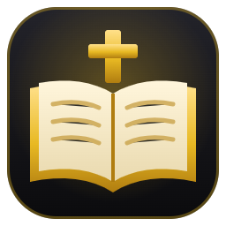

PRÉVIA
AO VIVO—
Clique nas palavras (aqui ou na prévia) para destacar com a cor selecionada. Setas ←/→ trocam de versículo (funciona com passador de slides).

BIBLE ACF STUDIOClique nas palavras (aqui ou na prévia) para destacar com a cor selecionada. Setas ←/→ trocam de versículo (funciona com passador de slides).